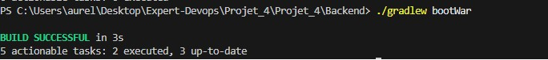
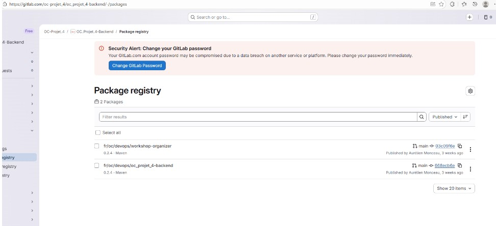

1️⃣ Création du package local
Le package local pour le backend est créé avec succès.
Cette étape permet de générer l’artefact de l’application
prêt à être déployé.

✔ Package local créé
2️⃣ Envoi du package vers GitLab
Le package est ensuite envoyé vers GitLab à l’aide de la commande suivante :
mvn deploy
Cette commande publie automatiquement le package dans le repository distant.

✔ Package déployé sur GitLab